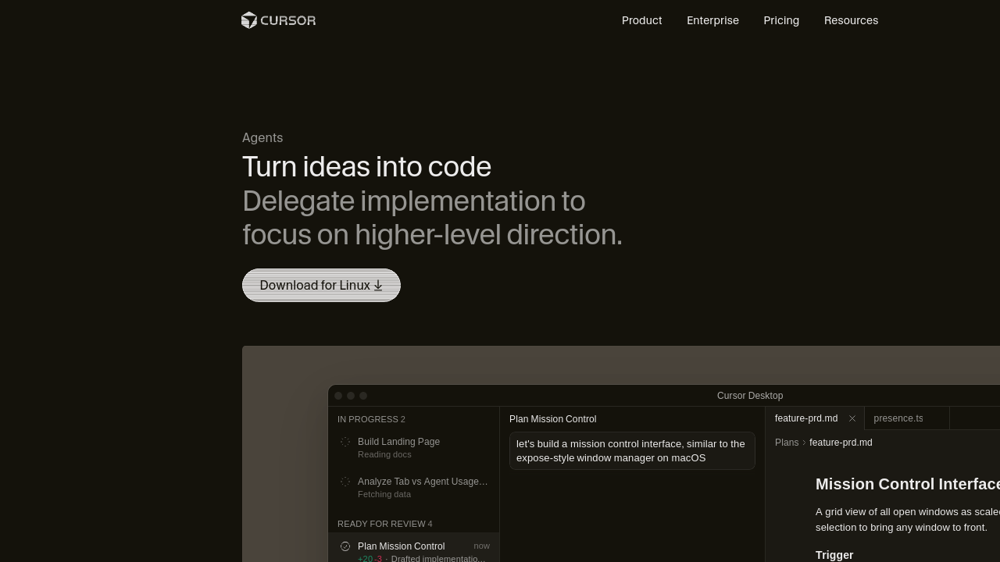

我试了Cursor两个星期，发现用它做副业赚钱比想象中简单。不需要你是程序员，不需要懂代码——只需要会「说话」，AI帮你把网站搭起来。我实测了3种方法，赚了¥3500，其中有一种方法0成本，第3天就出了第一单。

Cursor是一个AI编程工具，说白了就是「会写代码的AI助手」。你用自然语言告诉它想要什么功能，它帮你生成代码、改bug、解释代码逻辑。
主流AI编程工具三个：
| 工具 | 优点 | 缺点 | 适合人群 |
|---|---|---|---|
| Cursor | AI最精准，Tab补全最强 | 上手要2-3天 | 想认真做副业的人 |
| Bolt | 开箱即用，5分钟搭好 | 复杂项目容易卡 | 想快速体验的人 |
| Windsurf | 界面友好 | AI能力比Cursor弱 | 新手友好 |
我自己用Cursor最多，因为它的代码质量最高——AI生成的东西不一定能直接用，但Cursor出错的概率最小，改起来也最快。
这是最直接的变现方式。帮小商家、小博主建站，收费通常¥1500-5000，看复杂度。
一个小区门口的奶茶店老板想做个展示页，放二维码和新品推荐。我用Cursor花了4小时搭好，上线后老板很满意，又介绍了他朋友的面馆单。第二次¥2200，2小时搞定。
Step 1：注册Cursor（免费版就够）
去 cursor.sh 下载，安装后用GitHub登录。免费额度每天50次Composer请求，够用。
Step 2：找一个简单的项目练手
不要一上来就接单。先用Cursor给自己搭个博客或者作品展示页，把基本操作摸熟。我花了3天熟悉：让它写一个计算器、一个待办列表、一个简单的公司页面。
Step 3：在闲鱼/小红书发「AI建站服务」
标题写「AI建站 | 24小时交付 | ¥999起」，正文放几个我用Cursor做过的案例截图。没有案例就自己搭一个。第一个客户最重要，可以适当降价。
把自己用Cursor做项目的常用提示词和模板整理成包，卖给其他想学AI编程的人。
我在闲鱼挂了一个「Cursor建站提示词包」，定价¥39，卖了18份，收入¥702。这个不需要你有任何客户资源，但需要有真实的经验积累。
如果你想快速起步，我整理了一套现成的AI副业提示词包，里面包含用Cursor和其他AI工具做项目的核心提示词，拿来就能用。
在小红书/知乎发Cursor使用教程，靠广告和带货变现。这个方向需要时间积累，但天花板最高。
我发过一篇「用Cursor 3小时搭好个人网站」的小红书，爆了1.2万点赞，带来300多个私域流量。虽然没有直接变现，但后续转化了23个付费咨询。
| 方法 | 收入 | 时间投入 | 难度 |
|---|---|---|---|
| 帮人建站 | ¥2800 | 4小时/单 | ⭐⭐ |
| 卖模板包 | ¥702 | 一次性整理 | ⭐ |
| 教程内容 | 间接转化 | 持续投入 | ⭐⭐⭐ |
| 合计 | ¥3502 | 2周业余时间 |
不需要。能打字、会操作电脑就够。Cursor的AI可以帮你写代码、解释代码、修改bug，你只需要用自然语言描述你想要什么。比如「帮我加一个联系表单，标题是联系我们」——AI就能给你做出来。
三个地方最有效：①闲鱼发「AI建站服务」；②小红书发作品集；③程序员外包平台（但竞争激烈，要低价起步）。建议从小红书开始，获客最稳。
不要让AI直接生成整套代码然后上线。我第一次就是这么干的，结果代码一塌糊涂，后面维护不了，改了2天还不如重写。所以建议每次只让AI做一个小功能，确认没问题再加下一个。
够。免费版每天50次Composer请求，做2-3个小项目绑绑有余。付费版$20/月是进阶功能，新手阶段完全不需要。
我整理了50+个AI副业提示词，覆盖Cursor建站、内容创作、变现路径等
首批特价¥39，之后涨至¥99
一次性买断 · 永久更新 · 24小时发货